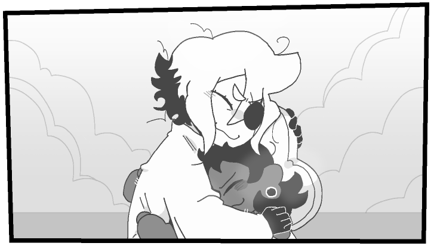
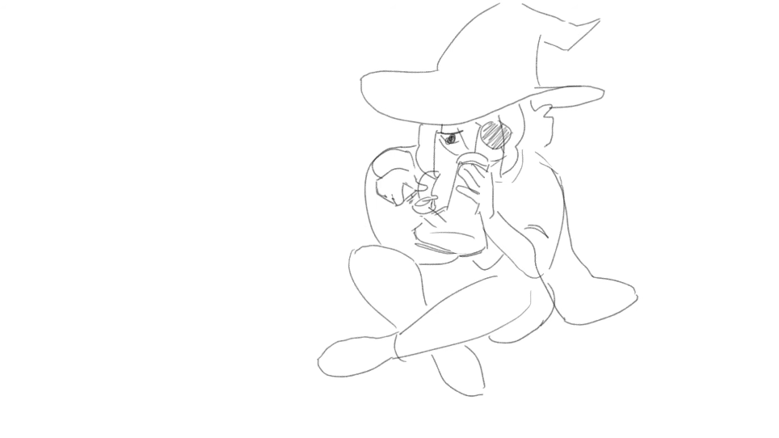

Siffrin no middle name no last name burst into tears today upon the realization that they're allergic to pineapples and therefore can't enjoy a nice slice with the team kid, Bonnie.
The time loop they are stuck in "has no bearing on this", they report. "It's just the pineapple thing, teehee..."
Nowadays, they ate a star whole and their head exploded, so now they're just annoying another Siffrin who hasn't yet learned the awful truth of their allergies up close.
"I had a dream where a big rock fell on Frin and he died and we taxidermied him and I got to keep his corpse as a doll for some reason!" Bonnie, the resident 10-year-old on snack duty for a group of six adventurers, one of which is their sister, Petronille. "I remember finding out about the doll thing from the newspaper that morning after Frin's death!"
Bonnie then reportively "hugged Siffrin really hard", and by reportively I mean we have the image of it right here
When questioned on the taste of the star that they ate to cause their head to explode, they said "Well worth having my head exploded into a star, hehe!" much like we literally just quoted to you.
Upon being reminded of the loss of their he/him pronouns in the divorce, Loop (that's their name now) told reporters to "blinding LEAVE!" and then proceeded to cry for six whole hours while Siffrin (the one who has since tasted pineapple and died and whose problems actually are from the timeloop thing) pulled out a bog and started to smoke some weed for some reason.
look at how stupid he looks with his dumb lil blunt